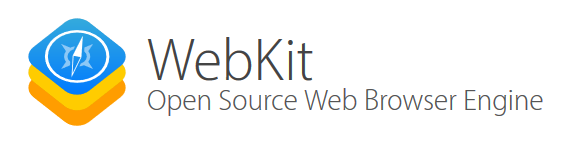
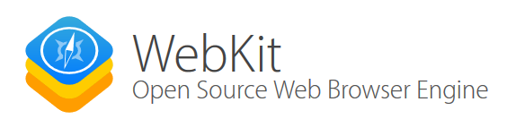
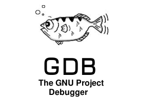
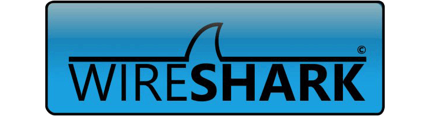
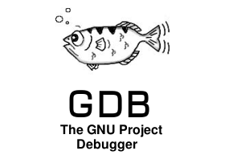
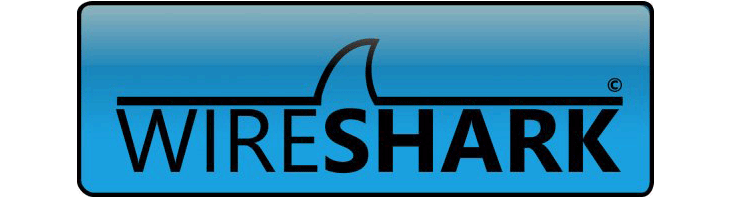
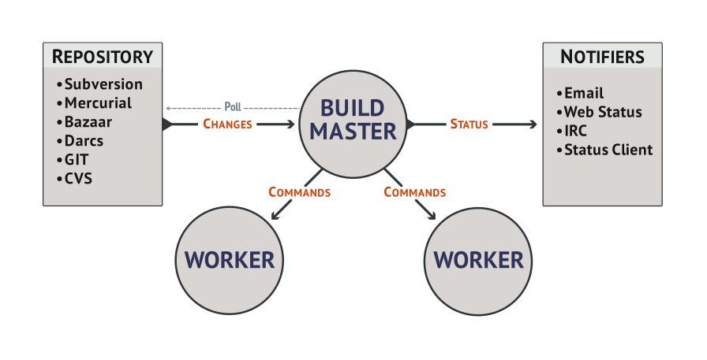
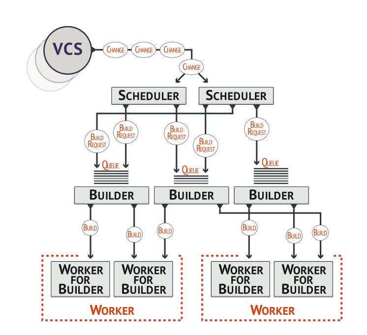
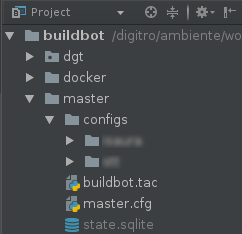
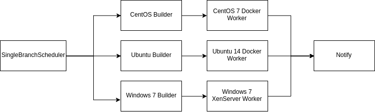

- Continuous Integration/Delivery
- The Challenge
- Buildbot
- How we did it
Continuous Integration with Buildbot
Jhonatan da Rosa @ Dígitro Tecnologia
Continuous Integration/Delivery
Continuous Integration
Continuous Integration (CI) is a development practice that requires developers to integrate code into a shared repository several times a day. Each check-in is then verified by an automated build, allowing teams to detect problems early.ThoughtWorks
By integrating regularly, you can detect errors quickly, and locate them more easily.
Continuous Delivery
Continuous Delivery (CD) is the natural extension of Continuous Integration, an approach in which teams ensure that every change to the system is releasable, and release any version with the push of a button. Continuous Delivery aims to make releases boring, so that we can deliver frequently and get quick feedback on what users care about.ThoughtWorks
Faster deliveries
↓ bugs
↑ quality
The Challenge
CI of a multi-platform client/server software with parts written in different languages
- 2 NodeJS servers
- C++/Qt Client
- Different deps versions
- Multiple OS
- Windows 7
- Ubuntu 14
- CentOS 7
Buildbot
What is?
Buildbot is a framework in which you implement a system that matches your workflow and grows with your organization.
Buildbot
What is it for?
- Automate aspects of the software development cycle: Build, Test, Release, Deploy
- Pinpoint problems quickly
- Build on a variety of platforms
- etc
Who uses?
 

 




Architecture Overview

Master Architecture

PyFlakes Example
from buildbot.plugins import *
c = BuildmasterConfig = {}
# Worker
c['workers'] = [worker.Worker("example-worker", "pass")]
# VCS Pollers
c['change_source'].append(
changes.GitPoller(
'git://github.com/buildbot/pyflakes.git',
workdir='gitpoller-workdir', branch='master',
pollinterval=300
)
)
# Schedulers
c['schedulers'].append(
schedulers.SingleBranchScheduler(
name="all",
change_filter=util.ChangeFilter(branch='master'),
treeStableTimer=None,
builderNames=["runtests"]
)
)
c['schedulers'].append(
schedulers.ForceScheduler(
name="force",
builderNames=["runtests"]
)
)
factory = util.BuildFactory()
# check out the source
factory.addStep(
steps.Git(
repourl='git://github.com/buildbot/pyflakes.git',
mode='incremental'
)
)
# run pyflakes
factory.addStep(
steps.PyFlakes(command=["pyflakes", "src"])
)
c['builders'] = []
c['builders'].append(
util.BuilderConfig(
name="runtests",
workernames=["example-worker"],
factory=factory
)
)
The good, the bad, the ugly
- Versioned Pipeline
- Cloud Ready (latent workers)
- Easy
- Well documented
- Out of the box support for C++ and Multiple envs
- Rest API
- Must know python (not really bad ☺)
- No GUI to config
The good
the bad
the ugly
How we did it
- Docker workers
- XenServer Plugin
- git submodules for multiple configs
Project structure

AbstractLoader
class AbstractLoader:
def __init__(self):
from dgt.config import ConfigLoader
self.workers_dir = ConfigLoader().workers_dir
self.buildoutputs_dir = ConfigLoader().buildoutputs_dir
pass
def workers(self):
return []
def builders(self):
return []
def schedulers(self):
return []
def change_source(self):
return []
Builders & Workers
Node Servers
C++/Qt Client
Stumbles (1/2)
Dynamic Parts
-
util.Property -
util.Interpolate IRenderable@implementer(IRenderable) class Now(object): def getRenderingFor(self, props): return int(time.time())
Stumbles (2/2)
Deferrable Things
@implementer(IRenderable)
class IntPropertyCast(object):
prop = None
def __init__(self, prop):
assert IRenderable.providedBy(prop)
self.prop = prop
@defer.inlineCallbacks
def getRenderingFor(self, props):
result = yield defer.maybeDeferred(self.prop.getRenderingFor, props)
result = int(result)
defer.returnValue(result)
Thank you!
Jhonatan da Rosa @ Dígitro Tecnologia